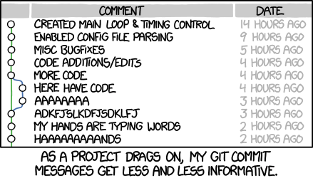
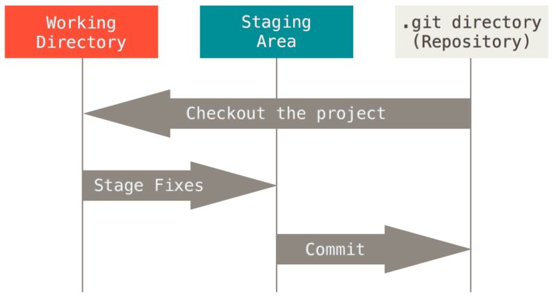
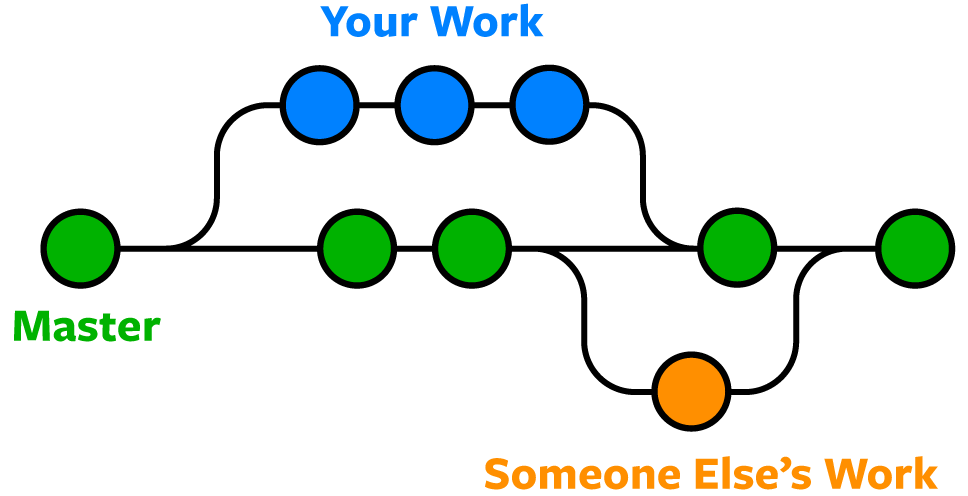

Git Basics: Version Control for Research Workflows
What is Version Control?
Version control is a system that tracks and manages changes to files over time. It allows you to:
- Track history: See what changed, when, and why
- Revert changes: Go back to previous versions if something breaks
- Collaborate: Multiple people can work on the same project simultaneously
- Understand context: Commit messages document the "why" behind changes
Imagine you're writing a paper and you save versions like: paper_v1.docx, paper_v1_revised.docx, paper_v1_final.docx, paper_v1_FINAL_ACTUAL.docx. Version control automates this and makes it sane.

Distributed Version Control with Git
Git is a distributed version control system, meaning:
- Every developer has a complete copy of the project history on their machine
- No single point of failure (unlike centralized systems)
- You can work offline and sync later
- Multiple developers can work on the same codebase without interfering
Key Concepts
Repository (Repo): A folder containing your project and its entire history.
Commit: A snapshot of your project at a point in time, with a message explaining what changed.
Branch: A parallel version of your code. You can work on features independently without touching the main branch.
Remote: A version of your repository hosted elsewhere (e.g., GitHub).
Push/Pull: Push sends your local changes to the remote; pull fetches changes from the remote.
Setting Up Git
Installation
Linux/macOS:
brew install git # macOS
sudo apt install git # Ubuntu/Debian
Windows: Download from git-scm.com
Your First Repository
Initialize a Local Repository
mkdir my_project
cd my_project
git init
Initial Configuration
git branch -M main #Rename master to main for modern naming convention
git config user.name 'Tutorial User'
git config user.email 'tutorial@example.com'
git config --list | grep -E 'user.name|user.email'
This creates a hidden `.git` folder containing all version control information.
### Add and Commit Files
```bash
# Create a file
echo 'print("Hello, World!")' > script.py
# Check status
git status
# Stage the file for commit
git add script.py
git status
git commit -m 'Initial commit: add hello world script'
Understanding the Workflow
Working Directory → Staging Area → Repository
(your files) (git add) (git commit)
- Working Directory: Your actual files
- Staging Area: Files you've marked for commit
- Repository: Committed snapshots stored in
.git/

Viewing History
git log
git log --oneline
git log --graph --oneline --all
Understanding Commits
Each commit has:
- Hash: Unique identifier (e.g., a1b2c3d)
- Author: Who made the change
- Date: When it was committed
- Message: Description of changes
A good commit message follows this structure:
[type](scope): brief summary
Detailed explanation of why this change was made.
What problem does it solve?
Fixes #123
Types: feat, fix, docs, style, refactor, test, chore
Example:
feat(calculations): add distance calculation function
Implements the Haversine formula for calculating great-circle
distances between two points on a sphere given their longitudes
and latitudes. This is useful for geographic calculations.
Fixes #15
Making Changes
Modifying Files
echo 'def add(a, b):' > math_ops.py && echo ' return a + b' >> math_ops.py
echo 'def subtract(a, b):' > utils.py && echo ' return a - b' >> utils.py
git status
git add math_ops.py
git status
git diff
git diff --staged
echo 'print("Math operations module")' >> math_ops.py
git diff math_ops.py
git add .
git commit -m 'feat(math): add math operations and utils modules'
Reverting Changes
echo 'This is an unwanted change' >> script.py
git status
git diff script.py
git checkout -- script.py
cat script.py
Branching
Branches allow parallel development without interfering with your main code.

Create and Switch Branches
git branch
git branch feature/new-calculation
git branch
git checkout feature/new-calculation
git branch
Branch Naming Conventions
Good branch names are descriptive and follow patterns:
- feature/user-authentication - new features
- fix/memory-leak - bug fixes
- docs/api-reference - documentation
- refactor/database-layer - code reorganization
- experiment/ml-model-v2 - exploratory work
Merging Branches
When your feature is ready:
echo 'def multiply(a, b):' > advanced_math.py && echo ' return a * b' >> advanced_math.py
git add advanced_math.py
git commit -m 'feat(math): add multiply function'
git log --oneline
git checkout main
git branch
git log --oneline | head -3
git merge feature/new-calculation -m 'Merge feature/new-calculation into main'
ls -1 *.py
git log --oneline
Merge vs Rebase (for advanced users):
git checkout -b feature/division
echo 'def divide(a, b):' > division.py && echo ' return a / b if b != 0 else "Error"' >> division.py
git add division.py && git commit -m 'feat(math): add divide function'
git log --oneline -5
git rebase main
git log --oneline -5
git checkout main
git merge feature/division --ff-only
git log --oneline --graph -10
Advanced Topics (Intermediate to Expert)
Powerful Log Viewing
Understand your project history better:
git log --graph --oneline --all --decorate
git log --oneline --author='Tutorial User'
git log --oneline | head -5
git log -p -1 | head -20
git log --stat | head -25
Undoing Things (Advanced)
git reflog | head -10
git blame script.py | head -3
git show HEAD | head -30
git show HEAD:script.py
Advanced Branching
echo 'test feature 1' > feature1.py
git add feature1.py && git commit -m 'test commit to reset'
git log --oneline | head -2
git reset --soft HEAD~1
git status
git reset HEAD feature1.py
git status
rm feature1.py
Stashing Work in Progress
echo 'work in progress' > wip.py
git add wip.py
git stash
git status
git stash list
git stash pop
git status
rm wip.py
Cherry-Picking Specific Commits
git checkout -b feature/power
echo 'def power(a, b):' > power.py && echo ' return a ** b' >> power.py
git add power.py && git commit -m 'feat(math): add power function'
echo 'def square(a):' > square.py && echo ' return a ** 2' >> square.py
git add square.py && git commit -m 'feat(math): add square function'
git log --oneline | head -3
git checkout main
git log --oneline | head -3
git cherry-pick $(git log feature/power --oneline | grep 'add power function' | cut -d' ' -f1)
git log --oneline | head -4
ls -1 *.py | grep power
.gitignore Best Practices
cat > .gitignore << 'EOF'
# Python
__pycache__/
*.py[cod]
*$py.class
*.so
.Python
venv/
env/
.venv
# IDE
.vscode/
.idea/
*.swp
*.swo
*~
# OS
.DS_Store
Thumbs.db
# Build/Distribution
build/
dist/
*.egg-info/
.eggs/
# Testing
.pytest_cache/
.coverage
htmlcov/
# Secrets
.env
.secrets
secrets.json
EOF
cat .gitignore
git add .gitignore && git commit -m 'Add .gitignore file'
Best Practices
- Commit Often: Small, logical commits are easier to understand and revert if needed
- Write Clear Messages: Explain the "why", not just the "what"
- Never Commit Secrets: Use
.gitignorefor sensitive files - Branch for Features: Keep main stable; develop features on branches
- Review Before Committing: Use
git diffto verify changes
Next Steps
You now understand Git fundamentals! Next, we'll explore GitHub for collaboration and hosting your repositories online.